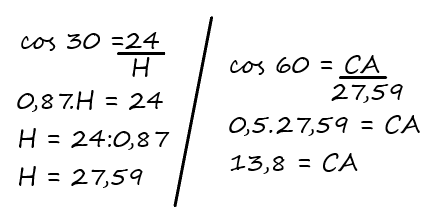
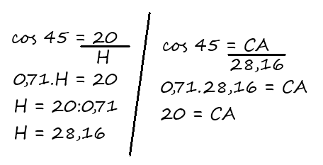
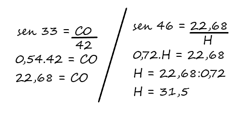
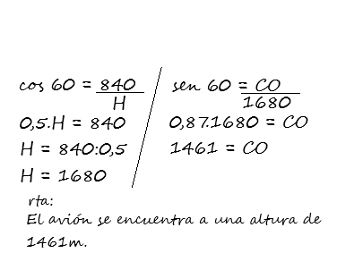
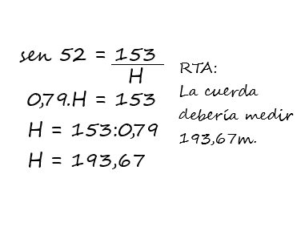

1. Para construir la subida de un puente la primer columna de apoyo se ubicará a 24m del comienzo del mismo. El ángulo de elevación de la subida será de 30° ¿Qué altura tendrá la primer columna? ¿Cuánto medirá ésta subida?
Los chicos resolvieron:
2. Calcular la altura del edificio, sabiendo que una persona observa su torre mas alta con un ángulo de inclinacion de 45° con respecto al piso.
Los chicos resolvieron:
3. Calcular la medida del lado AD sabiendo que el lado CA mide 42cm
Los chicos resolvieron:
4. Matías y Victoria quieren saber a que altura está volando un avión, para eso se ubican separados a una distancia de 840 m uno del otro. Cuando el avión pasa justo por encima de Matías, Victoria lo observa con un ángulo de elevación de 60° ¿A que altura se encuentra éste avión?
Los chicos resolvieron:
5. Se quiere colocar una tirolesa desde la punta de una montaña y que su recorrido llegue al suelo. Ésta montaña tiene una altura de 153m y la cuerda que se va a utilizar forma con el piso un ángulo de 52° ¿Cuánto debe medir la cuerda?
Los chicos resolvieron:
